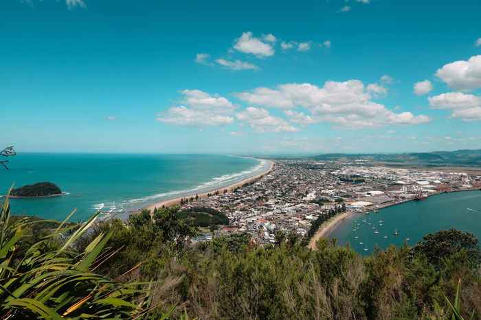

Mount Maunganui
Tauranga Tourist Location
Tauranga's Famous Coastal Mountain!
Mount Maunganui, also known as Mauao, is one of the Bay of
Plenty's most recognisable landmarks. The extinct volcanic
cone sits beside the Pacific Ocean and provides spectacular
views across Tauranga, the harbour, and the surrounding
coastline.
Visitors can walk around the base of the mountain or follow
walking tracks to higher viewpoints. The summit provides
impressive panoramic views and is a popular spot for
photography and sightseeing. The nearby beach is also a
popular place for swimming, relaxing, walking, and enjoying
the coastal scenery.
Mount Maunganui is a great destination for visitors who
enjoy nature, exercise, beaches, and scenic views. Access
to the mountain is free, making it an affordable attraction
for visitors. Travellers should still consider the cost of
food, transport, and parking when planning their visit.
Facts:
- Located in Tauranga
- Also known as Mauao
- Extinct volcanic cone
- Offers views across Tauranga and the Bay of Plenty
- Walking tracks lead around the base and towards the summit
- Mount Maunganui Beach is located nearby
- Popular for walking, swimming, and photography
- Free to access
Costs:
- Access to Mount Maunganui: Free
- Walking and sightseeing: Free
- Beach access: Free
- Estimated food costs: $10-$30 per person
- Estimated transport costs: $5-$20
- Estimated parking costs: $0-$10
- Estimated total visit cost: $15-$60 per person